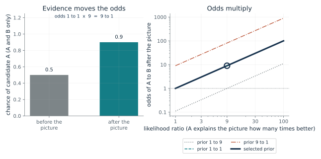
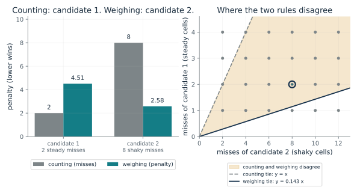
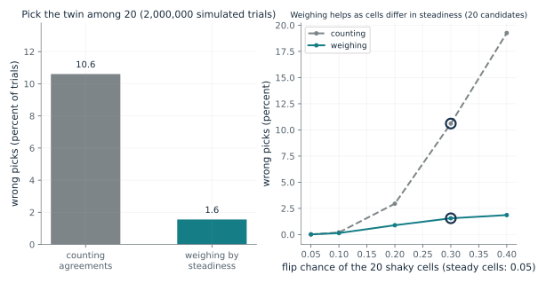
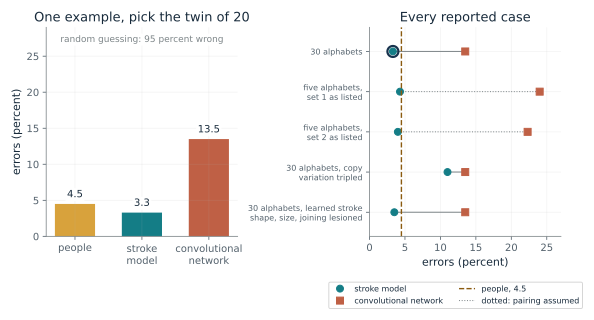
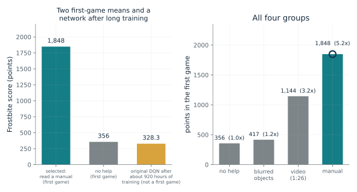
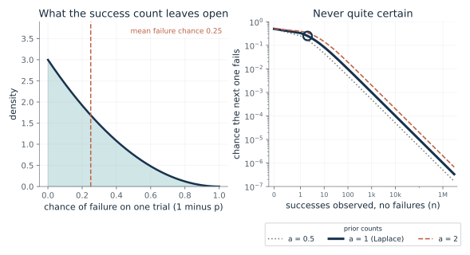
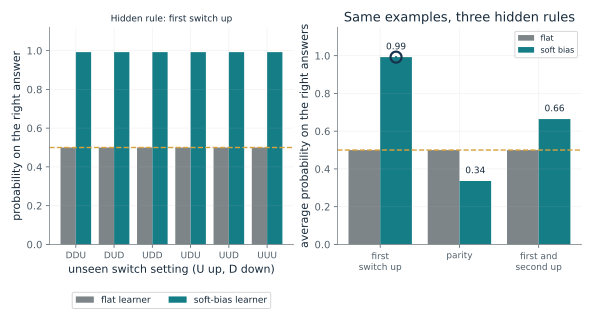
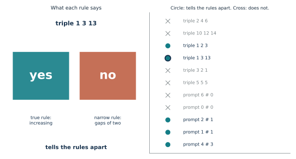

Use these ideas to ask what prior a confident answer rests on, to choose a test case that separates rival rules, and to read a one-shot result without crediting the whole gap to the prior.
“A system saw three examples that two different rules both explain and now answers with high confidence. What should I ask it next?”
Use mmi-ch11-learning-from-little with the companion's AI skill package. The illustrations below also work on their own.
How does a picture change the odds between two candidates?
From Chapter 11, One example was enough because the learner knew how characters are drawn
A picture is explained nine times as well by candidate A as by B, and the odds were even beforehand. What are the odds afterward, and what changes if the prior favored B?
Write each candidate's chance of explaining the picture and its chance beforehand. Dividing one candidate's posterior by the other's cancels the common evidence probability, leaving the likelihood ratio times the prior odds.
Predict first: With a likelihood ratio of 9 and a prior favoring B by 9 to 1, predict whether the picture is enough to make A the better bet.

Likelihood ratio (A over B): 9 · Prior odds (A to B): 1
What happens: Even prior odds times 9 give odds of 9 to 1 for A, a chance of 0.9 if A and B are the only cases. Now move the prior to 1 to 9: the nine-fold likelihood ratio exactly cancels it and the odds are 1 to 1.
Candidate A explains the picture 9 times as well as B and starts at odds 1 to 1, so the odds after the picture are 9 to 1. If A and B are the only cases, that is a chance of 0.9 for A, up from 0.5.
- Prior odds
- 1 to 1
- Likelihood ratio
- 9
- Odds after the picture
- 9 to 1
- Chance of A after the picture
- 0.9
The rest of the chapter asks where the prior comes from. This line is why it matters: one example can settle a question only because the learner arrives already holding odds.
A model that predicts behavior does not show that a person's brain uses the same machinery. The chapter says this of its Bayesian account.
A machine can apply the rule if its designer specifies priors and likelihoods; the arithmetic does not make a poorly specified model reliable.
Show the calculation
Posterior odds = likelihood ratio x prior odds = 9 x 1 = 9. Probability = odds/(1 + odds) = 9/10 = 0.9, valid only when A and B exclude each other and exhaust the cases.
The equations and symbols
- c, c'
- two candidate characters
- I
- the one picture shown
- p(I | c) / p(I | c')
- the likelihood ratio, how much better c explains the picture
- p(c) / p(c')
- the prior odds before the picture
Both candidates and the picture have nonzero probability, and the picture has nonzero likelihood under c'. Converting odds to a probability needs the two candidates to exclude each other and exhaust the cases.
Check your understanding: Priors 0.4 and 0.6 for A and B and likelihoods 0.75 and 0.25. What are the posterior odds for A?
Book source: Chapter 11, One example was enough because the learner knew how characters are drawn. Illustration C11-D01. Formula. Book formula. The nine-to-one case with equal prior odds is the chapter's illustration; the chapter says it states the idea of the rule, not the exact score the paper computes. The other values are chosen here. The 2 to 3 prior with likelihood ratio 3 is the derivation's constructed check (posterior odds 2).
Why can fewer misses lose?
From Chapter 11, One example was enough because the learner knew how characters are drawn
One rival misses the picture on 2 steady cells and another misses on 8 shaky cells. Which should a learner who knows the cells' habits prefer?
Two drawings of one character differ on a steady cell about 1 time in 10 and on a shaky cell about 4 times in 10. Taking the logarithm of how much more often a cell agrees than disagrees turns that into a score that adds across cells.
Predict first: Candidate 1 has 2 misses on steady cells and candidate 2 has 8 on shaky cells. Predict which wins when you count, and which when you weigh.

Candidate 1 misses on steady cells: 2 · Candidate 2 misses on shaky cells: 8
What happens: Counting picks candidate 1 (2 against 8). Weighing gives 2 x 2.25 = 4.51 against 8 x 0.323 = 2.58, so candidate 2 wins with four times the misses. Drop candidate 1 to a single steady miss and weighing flips back to candidate 1, at 2.25 against 2.58.
A miss on a steady cell costs 2.25 and on a shaky cell 0.323. Candidate 1 has 2 steady misses and candidate 2 has 8 shaky ones, so counting picks candidate 1 and weighing picks candidate 2. This is a constructed toy, not data.
- Weight on a steady cell
- 2.25
- Weight on a shaky cell
- 0.323
- Penalty, candidate 1 / candidate 2
- 4.51 / 2.58
- Weighing picks
- candidate 2
This is the chapter's account of what a prior buys: it tells a learner which differences matter, so one picture can be sorted from many.
The chapter makes no claim that people weigh cells this way; it is an illustration of knowing how copies vary.
The weights are a specification a program can compute exactly, from the flip chances.
Show the calculation
Steady cells flip 0.05 of the time, so twins differ with chance 2 x 0.05 x 0.95 = 0.095 and the weight is ln(0.905/0.095) = 2.25. Shaky cells: 2 x 0.3 x 0.7 = 0.42, weight 0.323. Penalties: 2 x 2.25 = 4.51 and 8 x 0.323 = 2.58.
The equations and symbols
- f
- the chance one drawing flips a cell
- d
- the chance two drawings of the same character differ on that cell
- w
- the weight a disagreement on that cell counts against a candidate
Cells are inked or blank with equal chance, flip independently across cells and between drawings, and the learner knows each cell's flip chance. Real characters are not grids of independent cells.
Check your understanding: How many shaky misses would candidate 2 need before weighing stops preferring it to a candidate with 2 steady misses?
Book source: Chapter 11, One example was enough because the learner knew how characters are drawn. Illustration C11-D02. Constructed example. The chapter's own simulated world: 40 cells, 20 steady (flip chance 0.05) and 20 shaky (0.30). The weights 2.25 and 0.32, and the penalties 4.5 and about 2.6, are the chapter's numbers recomputed. It is a toy, not a result from the paper.
How often does knowing which cells are steady pay off?
From Chapter 11, One example was enough because the learner knew how characters are drawn
Over many 20-way trials, how much worse is counting agreements than weighing them, and does the gap shrink when all cells are equally steady?
Each trial draws a character, a picture and a twin as two noisy redraws of it, and unrelated rivals. The counting rule picks the candidate matching the most cells; the weighing rule picks the one with the lowest weighted penalty.
Predict first: Predict the error of counting agreements and of weighing by steadiness for 20 candidates, and what happens when the shaky cells are as steady as the others.

Flip chance of the 20 shaky cells: 0.3 · Candidates to choose among: 20
What happens: Counting is wrong about 10.6 percent of the time and weighing about 1.6 percent in this seeded run of 2,000,000 trials, matching the chapter's 10.6 and 1.6 within Monte Carlo error (about 0.02 and 0.01 points). An earlier 40,000-trial run showed 10.5 and 1.5; that gap was sampling noise, not a disagreement with the book. Slide the shaky chance down to 0.05 and the two methods become identical, since all weights are equal.
In this seeded simulation of 2,000,000 trials, counting picks the wrong twin 10.6 percent of the time and weighing 1.6 percent, with shaky cells flipping 0.3. The chapter reports about 10.6 and 1.6 for 20 candidates at 0.30. Constructed model, not a measurement; Monte Carlo error about 0.02 and 0.01 points.
- Counting, wrong picks (percent)
- 10.6
- Weighing, wrong picks (percent)
- 1.6
- Random pick would be wrong (percent)
- 95
- Counting errors per weighing error
- 6.83
It shows the prior doing real work in a controlled world, and that its value depends on how well it matches the world.
Both pickers are explicit procedures that a program applies; the second needs the flip chances as background knowledge.
Show the calculation
Weights: steady 2.25, shaky 0.323. Each trial draws one 40-cell character, two redraws (picture and twin) and 19 unrelated grids; the lowest total penalty wins and ties are broken at random. Equal flip chances (0.05 and 0.05) give equal weights, so the two methods then agree exactly. Standard error of a simulated rate = sqrt(rate x (1 - rate)/2,000,000), here 0.02 and 0.01 percentage points. The ratio of the two rates is shown only when both are at least 1 percent, because a smaller rate rests on too few wrong picks to trust the ratio.
The equations and symbols
- w_i
- the weight of cell i, equal to 1 when counting
- c_i, I_i
- the candidate's and the picture's value at cell i
The chapter's constructed world: independent 40-cell grids, 20 steady cells at 0.05, the rest at the shaky chance, other candidates unrelated characters, ties broken at random. A simulation is a computation with a stated model, not a measurement, and every simulated rate carries Monte Carlo error. When a rate falls under 1 percent the ratio of counting to weighing errors is not shown, since it rests on too few wrong picks.
Check your understanding: If every cell had the same flip chance, why would counting and weighing give the same answers?
Book source: Chapter 11, One example was enough because the learner knew how characters are drawn. Illustration C11-D03. Simulation. Simulation with disclosed seeds (11000 plus 10 times the shaky chance in percent plus the number of candidates), 2,000,000 trials per setting (an earlier 40,000-trial version gave 10.5 and 1.5 at the default, which was Monte Carlo noise, not a disagreement with the book), written for this companion from the chapter's description. The chapter reports about 10.6 and 1.6 percent for 20 candidates and a shaky flip chance of 0.30; the default run here gives 10.6 and 1.6. Not a result from the paper.
What did the one-shot character test report?
From Chapter 11, One example was enough because the learner knew how characters are drawn
After one look at a new handwritten character, how often did people, a stroke model and a convolutional network pick its twin wrongly, and how did that change with less background?
The stroke model fitted numbers inside a fixed plan of strokes, parts and relations. Tripling its allowance for how much one copy differs from the standard form raised errors from 3.3 to 11.0 percent. A separate lesion to what it had learned about how strokes are shaped, sized and joined left errors at 3.5 (from the paper's supplement, as the chapter cites it).
Predict first: Predict whether the network's errors fall or rise when the background shrinks from 30 alphabets to five, and what that does to the stroke model.

Case: 30 alphabets
What happens: The stroke model rose only from 3.3 to 4.3 percent, while the network went from 13.5 to 24.0. Then pick the lesion that tripled copy variation: the stroke model's errors rise to 11.0, so knowing how copies vary was doing real work.
Reported errors for 30 alphabets: stroke model 3.3 percent, convolutional network 13.5 percent, people 4.5 percent. The chapter gives no split of how much each difference between the models mattered, and a lesion shows one learned part mattered, not that the whole prior did.
- Stroke model errors (percent)
- 3.3
- Convolutional network errors (percent)
- 13.5
- People errors (percent)
- 4.5
- Network errors per stroke-model error
- 4.09
It is the chapter's evidence that a prior can make one example enough, and its warning that the gap between models is not all prior.
People averaged 4.5 percent errors. Accounts of how they did it are models, and the study does not show a mechanism.
The stroke model is a program with a designed structure (the authors call it prewired) and numbers learned from earlier characters; the network learned from pictures only.
Show the calculation
Network errors divided by stroke-model errors = 13.5/3.3 = 4.09. In the lesion rows the network figure is its intact 13.5, and the stroke figure is the lesioned model's.
The equations and symbols
- errors
- the percent of 20-way trials answered wrongly
- random guessing
- wrong 95 times in 100 among 20 candidates
Nothing is recomputed. The chapter lists the two stroke-model errors (4.3, 4.0) and the two network errors (24.0, 22.3) without saying which belong to the same set; pairing them in listed order is an assumption, which is why the two rows read 'as listed' and their connecting lines are dotted. The authors say the 4.5 percent for people may be an upper bound, since people answered quickly and had no incentive. The stroke model also had pen-stroke data the network never saw, and the two were trained on different tasks.
Check your understanding: Does the lesion result show that the whole prior accounts for the gap between 3.3 and 13.5 percent?
Book source: Chapter 11, One example was enough because the learner knew how characters are drawn. Illustration C11-D04. Reported result. Reported results quoted from the chapter: Lake, Salakhutdinov and Tenenbaum (Science, 2015) and the 2019 progress report. 40 people on Mechanical Turk, ten trials each; the 3.5 percent figure for the lesion of what the model had learned about how strokes are shaped, sized and joined comes from the paper's supplement as cited in the chapter. The two five-alphabet sets are listed in the order the chapter gives them, and each used 136 or 156 characters.
How much did a manual change a first game?
From Chapter 11, Players who read a manual scored 5.2 times higher in their first Frostbite game
How many times higher was the average first-game Frostbite score for players who read a manual than for players with no help?
The ratio divides a group's mean first-game score by the unaided group's. The scale in the 2015 paper sets random play at 0 and a professional tester at 100.
Predict first: Predict the factor by which reading a manual raised the first-game score, and whether blurring the moving objects changed it.

Group: manual
What happens: The manual group averaged 1,848 against 356: 5.19 times, the chapter's 5.2. Switch to blurred objects: 417, only 1.17 times, which the authors report as no detectable difference (p = 0.663).
Players in the group 'read a manual' averaged 1,848 points, 5.19 times the no-help 356. The authors read the manual result as a hint that people build a model of the game; no mechanism was measured. The original network, after about 920 hours of training, scored 328.3, 6.2 on the 2015 scale.
- Mean first-game score
- 1,848
- Times the no-help score
- 5.19
- Players in the group
- 72
- Original DQN on the 2015 scale (after about 920 hours of training)
- 6.2
It shows a head start that a learner can be given in words, and the chapter's caution that nobody has counted what each learner arrived with.
The players are people on Mechanical Turk, paid by score. The authors' remark about building a model of the game dynamics is an interpretation; no mechanism was measured.
The networks learn from game scores over about 920 hours of play, while the manual players had one session.
Show the calculation
Ratio = 1,848/356 = 5.19. Scale = 100 x (score - 65.2)/(4,335 - 65.2); for 328.3 this is 6.2, the 6.2 the chapter reports. The human group means are not put on this scale: the chapter says nothing shows the manual group played like professionals, and the two studies differ in training, players and setting.
The equations and symbols
- S bar
- a group's mean score in its first full game
- S_random, S_tester
- 65.2 for random play and 4335 for a professional tester, from the 2015 deep Q-network paper
A short symposium paper comparing four Frostbite groups on first episodes only. The 328.3 is the original deep Q-network after about 920 hours of training, not a first-game score and not the Double DQN the authors compared; people and networks come to the game with different things already in place, so the comparison is not a fair count of what each learner had beforehand.
Check your understanding: The original network scored 328.3 against 65.2 for random play and 4335 for a professional tester. What is that on the 2015 scale?
Book source: Chapter 11, Players who read a manual scored 5.2 times higher in their first Frostbite game. Illustration C11-D05. Reported result. Reported results quoted from the chapter and its sources: Tsividis and colleagues (2017) for the four group means (356, 417, 1,144 and 1,848) and group sizes; Mnih and colleagues (2015) for the 328.3 score and the 6.2 percent scale. The companion converts only the network's 328.3 to that scale (the chapter's 6.2); it does not convert the human scores.
How sure can n successes make you?
From Chapter 11, A strong guess about the world speeds learning until the world disagrees
After n successes in a row and no failures, how likely is another success, and how much of that answer is the prior?
Average the next trial's success chance over the belief about the unknown chance after n successes, which is proportional to p to the n under a uniform prior. The integral gives (n + 1)/(n + 2).
Predict first: Predict the chance of another success after 1 and after 2 successes, then the failure chance after Laplace's 1,826,213.

Successes observed (n): 2 · Prior counts (a): 1
What happens: After 1 success the chance is 2 in 3 and after 2 it is 3 in 4, exactly the derivation's check. Move n to 1,826,213 and the odds are 1,826,214 to 1. Then change the prior counts at the same n: the answer changes with the prior.
After 2 successes and no failures, the uniform-prior rule gives 0.75 for another success. With prior counts a = 1 the answer is 0.75: the rule is a statement about the prior, not a measured chance. Only a = 1 is the chapter's rule; the other values are this companion's variation.
- Chance of another success
- 0.75
- Chance of failure
- 0.25
- Odds for another success
- 3 to 1
- Prior (pseudo-counts a)
- 1 (the chapter's uniform prior)
It shows how a stated assumption about the world turns a count into a confident prediction.
Laplace's example shows a mathematician's reasoning, not a measurement of how people judge the sun.
A system can apply the rule to a simple binary event when its assumptions are defensible, and should also consider failures and changes over time.
Show the calculation
P(next success) = (n + a)/(n + 2a) = (2 + 1)/(2 + 2) = 0.75; for a = 1 this is (n + 1)/(n + 2).
The equations and symbols
- n
- the number of successes observed, with no failures
- a
- prior counts of success and failure; a = 1 is Laplace's uniform prior
A fixed but unknown chance of success, independent trials given that chance, and a uniform prior on it. A figure like Laplace's is a statement about a prior, not a measured chance.
Check your understanding: A system has seen 9 successes and no failures. What does the rule predict, and what must hold for it to be sensible?
Book source: Chapter 11, A strong guess about the world speeds learning until the world disagrees. Illustration C11-D06. Formula. Book formula and Laplace's 1814 figures (1,826,213 days, odds 1,826,214 to one) as the chapter quotes them. The prior counts a other than 1 are this companion's variation, using the standard result for a symmetric prior, to show that the answer depends on the prior.
What does a strong prior cost when it is wrong?
From Chapter 11, A strong guess about the world speeds learning until the world disagrees
Two examples fit 64 of 256 possible rules. A learner who favors one-switch rules is nearly certain after them. How does it fare when the hidden rule is one of those, and when it is not?
Keep only the rules that fit the examples and renormalize the belief. The learner's chance on an unseen setting is the total belief of the rules that match the hidden rule there.
Predict first: After the two examples, predict the learner's average probability on the right answers if the hidden rule is the first-switch rule, and if it is parity.

Hidden rule: first switch up · Examples shown: 2 · Belief in one-switch rules: 0.99
What happens: With parity hidden the biased learner is nearly sure of the first-switch rule and averages only 0.34 on the right answers, worse than a coin. Set the examples to 3 and its prediction falls back to 0.5.
After the examples (DDD is no, DUU is no) the soft-bias learner puts 0.985 of its belief on the one-switch rules and scores 0.992 on the unseen settings; the flat learner scores 0.5. Averaged over all 256 possible hidden rules both would score exactly 0.5. This is a constructed toy.
- Soft-bias learner, average on the right answers
- 0.992
- Flat learner, average on the right answers
- 0.5
- Rules still consistent (of 256)
- 64
- Belief on the six one-switch rules
- 0.985
It is the chapter's honest ledger for one-shot learning: the head start and its price.
Both learners are exact Bayesian calculations over a list of rules; the bias is a design choice, not something learned here.
Show the calculation
64 of 256 rules fit the 2 examples. Soft-bias prior: 0.99 split over 6 one-switch rules, 0.01 over the other 250. Chance on an unseen setting = total posterior belief of rules that give the hidden rule's answer there; the bars average these.
The equations and symbols
- r
- one of the 256 rules, a yes or no for each of the 8 switch settings
- prior(r)
- flat: 1/256 each. Soft bias: the favored share split over the six one-switch rules, the rest over the other 250
Three two-way switches, every setting's answer given by the hidden rule, and no noise. The third example's answer comes from whichever hidden rule is chosen. The chapter's 'no free lunch' remark rests on Wolpert and Macready's result for search problems and does not say the same balance holds for the real world.
Check your understanding: Why does the flat learner average exactly 0.5 on every unseen setting?
Book source: Chapter 11, A strong guess about the world speeds learning until the world disagrees. Illustration C11-D07. Constructed example. The chapter's own simulated world, computed exactly by listing all 256 rules; not a result from any paper. The examples are all switches down, first down with the other two up, and for the third example first and third up with the second down; each answer is the hidden rule's own (no, no, and no for parity, as in the chapter).
Which test case can separate two rules?
From Chapter 11, An example that every candidate rule explains teaches nothing
Several rules explain every example so far. Which new item could the answer actually tell apart?
A triple that fits 'intervals of two' also fits the true rule, so hearing yes teaches nothing about which is right. Only a triple the narrow rule forbids but the true rule accepts can eliminate it.
Predict first: Predict whether 10 12 14, 1 3 13 and 3 2 1 can each tell 'increasing' from 'gaps of two'.

Test item: triple 1 3 13
What happens: 1 3 13 and 1 2 3 both split the rules here: the true rule says yes and the narrow rule says no. The triple 10 12 14 fits both and 3 2 1 fails both, so neither teaches anything. Then try the prompt 2 # 1, which separates addition from 'first plus twice the second'.
For the triple 1 3 13, the true rule (increasing order) says yes and the narrow rule (gaps of two) says no. Only a triple that one rule forbids and the other accepts can split them. Wason's students and rules are the chapter's account of his 1960 study.
- Item
- triple 1 3 13
- Rule 1 says
- yes (true rule)
- Rule 2 says
- no (narrow rule)
- Tells the rules apart
- yes
It gives a way to check any confident answer, from a person or a machine: ask for a case where the favored rule and a rival differ.
In the chapter's account of Wason's 1960 task, 22 of 29 students announced a wrong rule first, nearly all narrower than the true one. That is one lab task, not a law of how people reason.
The # prompt is an invented illustration; no system was tested.
Show the calculation
True rule: first < second < third. Narrow rule: second - first = 2 and third - second = 2. Compare the two answers.
The equations and symbols
- rule_1, rule_2
- two rival rules, such as the true rule and a narrower one
- x
- a new triple or prompt
Two rival rules only. The chapter notes the puzzle was built to trap confirming evidence, so it does not measure everyday reasoning, and the coding of each student's reasons was Wason's own. A finite set of answers cannot prove no unimagined rule also fits.
Check your understanding: Why does the prompt 6 # 0 teach nothing about addition versus 'first plus twice the second'?
Book source: Chapter 11, An example that every candidate rule explains teaches nothing. Illustration C11-D08. Reported result and constructed example. Wason's 1960 puzzle as the chapter reports it: the true rule is three numbers in increasing order, and the narrower rule is intervals of two. 29 students: 6 announced the right rule first, 22 a wrong one, one none; 21 found the right one in the end. The prompt with the # symbol is the chapter's own invention, as it says; no system was tested.
Mathematical illustrations use the book's formulas with disclosed small examples. Each interactive choice shows a result computed from the same calculations as the chapter notebook. A simulation is not a measurement, and for a brain the mathematics is a model: a picture illustrates a result, and the assumptions determine its scope. Review copy, brain-computer partnership revision of 1 november 2026.